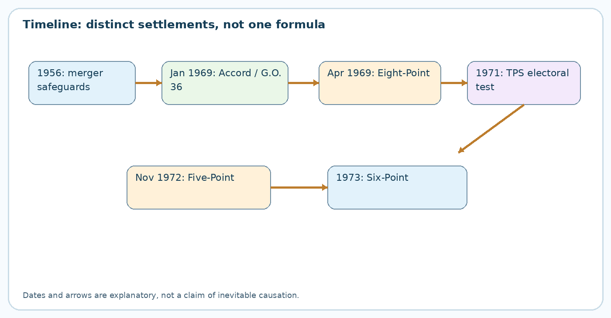
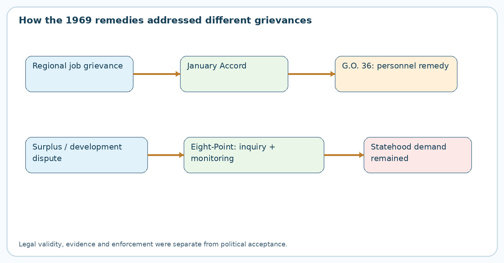
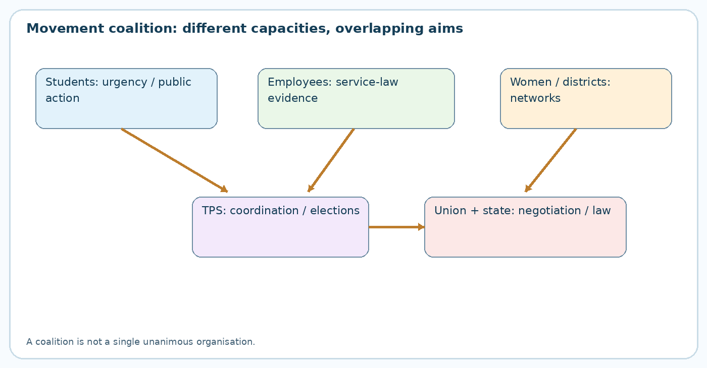

Paper VI · Unit I · Topic 5 — Telangana Praja Samithi, the Course of the 1969 Movement and the Eight- and Five-Point Formulas
TGPSC Group I Mains | Telangana Movement and State Formation | Original English study chapter | 25 October 2026 | Draft — independent academic review pending
Exact syllabus line: “Formation of Telangana Praja Samithi and Course of Movement - the Spread of Telangana Movement- Major Events, Leaders and Personalities- All Party Accord – G.O. 36 - Suppression of Telangana Movement and its Consequences-The Eight Point and Five-Point Formulas-Implications.” The wording was verified from the indexed commission-hosted 2022 Group I scheme-and-syllabus PDF. Direct retrieval of the original commission-hosted Notification 02/2024 and the 2022 PDF failed in this run; therefore direct authentication of the 2024 document is not claimed.
Question integrity: The thirty MCQs and six mains prompts below are original practice questions. None is labelled as an official previous-year question. Dates and contested details are qualified in the source audit; do not treat uninspected archival records as authenticated.
Syllabus map and reading strategy
| Syllabus demand | Where covered |
|---|---|
| Telangana Praja Samithi formation and leadership | Sections 4–8 |
| Spread, major events and personalities | Sections 9–15 |
| All-Party Accord and G.O. 36 | Sections 2–3 and 16–18 |
| Suppression and consequences | Sections 19–22 |
| Eight-Point Formula and implications | Sections 23–26 |
| Five-Point Formula and implications | Sections 27–29 |
| Synthesis, revision, cases, questions and mains answers | Sections 30–33 and appendices |
1. Why a movement for safeguards became a movement for statehood
The 1969 Jai Telangana agitation was not born as a single organisation with a single agreed programme. It emerged from accumulated distrust over the protective bargain associated with the 1956 formation of Andhra Pradesh. Telangana's distinct experience as part of Hyderabad State meant that its educational institutions, employment eligibility rules, irrigation priorities and administrative practices differed from those of the coastal Andhra and Rayalaseema areas. Regional safeguards were designed to prevent integration from becoming domination by better-positioned groups. Their perceived violation created an issue of distributive justice: who obtained posts, whose revenue financed expenditure, and who had authority to check compliance?
The early demand to implement safeguards and the later demand to create a separate Telangana state were related but not identical. A candidate seeking enforcement of Mulki recruitment protections could support the existing state if effective enforcement were guaranteed. A separatist argued that recurring breach proved enforcement within the united state structurally unreliable. This shift from compliance claim to constitutional reorganisation claim is the central interpretive problem. It cannot be explained by one court judgment, one student leader or one police incident alone. Students supplied visibility; employees supplied institutional knowledge; political organisations supplied coordination; repression and contested remedies changed public expectations. In a mains answer, trace the sequence instead of claiming that separation was the unanimous objective from the first day.
2. The institutional background: 1956 safeguards and public employment
The Gentlemen's Agreement of 1956 was a political accommodation accompanying merger, while Mulki qualifications had roots in Hyderabad's earlier service arrangements. These should not be collapsed into one legal instrument. The Telangana Regional Committee, promises about expenditure and educational opportunities, and rules for certain public posts were meant to make the new linguistic state credible to Telangana residents. Implementation involved different authorities: the elected Andhra Pradesh government, administrative departments, courts and central institutions. Each could interpret obligations differently.
Public employment was particularly sensitive because state jobs offered income, social mobility and a share in the new government's power. A transfer or recruitment that was formally permissible under one interpretation could be viewed as a betrayal of the political settlement under another. A sound evidence audit requires original appointment orders, residence certificates, service categories and the applicable law on the relevant date. Political speeches and retrospective estimates are evidence of perceptions and mobilisation, but they are not substitutes for an appointment-by-appointment audit. Similarly, alleged diversion of Telangana's revenue must be evaluated against accounting conventions, capital spending and competing definitions of regional surplus.
3. The January 1969 All-Party Accord: negotiation under pressure
The All-Party Accord was an attempted political-administrative response to escalating protests over jobs and safeguards. Its central logic was to translate the complaint about non-local appointments into an enforceable administrative timetable. Accounts of the January meetings describe an undertaking to address appointments to posts protected for local candidates and to deal with employees whose appointments were disputed. This was not the same as conceding a separate Telangana state. It was a repair programme inside Andhra Pradesh, which explains why it appealed to some safeguard campaigners but failed to satisfy others who had lost confidence in the state's willingness or ability to comply.
The accord also illustrates a common policy dilemma. Retrospective removal of employees from occupied posts may vindicate one group's promised entitlement while causing serious hardship to another group that accepted an appointment in good faith. Supernumerary posts, transfers and phased implementation can mitigate the conflict, but require funds, verified lists and consistent legal authority. Without these, an agreement becomes a headline rather than a settlement. The movement's subsequent trajectory shows that negotiation must be judged not only by what leaders signed but by what the administration actually did, what courts permitted and what the public believed. Do not confuse the January state-level accord with the April central Eight-Point Formula.
4. Formation of the Telangana Praja Samithi: convention to organisation
The Telangana People's Convention developed into the Telangana Praja Samithi (TPS) in March 1969 as agitation widened beyond individual campus committees. Contemporary-retrospective accounts commonly place the conversion on 25 March 1969 and identify Ananthula Madan Mohan as the first president; Marri Chenna Reddy later became its most nationally visible leader. The important analytical point is organisational evolution. A convention can articulate a cause and host meetings, but a samithi or political organisation must raise funds, appoint office-bearers, coordinate districts, decide protest tactics, manage rival leaders and eventually face elections.
TPS did not create the Telangana grievance; it aggregated existing grievances into a political platform. Its organisational claim was that demands over Mulki jobs, regional expenditure, education and safeguards were symptoms of a broader problem of political control. The transition enabled the movement to communicate with Parliament and national parties, but also generated a new question: did a political leadership accurately represent students and employees who had carried the agitation? In assessing TPS, distinguish its origin, its programme, its social base, its leadership changes and its electoral strategy. Calling it simply a party formed by Chenna Reddy erases the earlier role of Madan Mohan and other organisers.
5. Ananthula Madan Mohan: early organisational leadership
Madan Mohan's significance lies in the early institutionalisation of the movement. A movement dominated by meetings, fasts and local committees needs a recognisable centre if it is to negotiate and sustain agitation. His association with the formation of TPS symbolised the effort to convert public indignation into a representative platform. Early leadership should not be judged only by later election results, because those results depended on a much wider organisational field that developed after March 1969.
There were limits to the first phase. Student groups did not automatically accept a party's decisions, while employees had practical service grievances that might be addressed without statehood. Leaders also differed over whether to seek immediate separation, enforce existing safeguards first, or bargain for stronger guarantees. Arrests and preventive restrictions made coordination harder and sometimes transferred prominence to figures who could negotiate with central authorities. A nuanced answer therefore recognises Madan Mohan as an early organiser without treating every later TPS decision as his own. Claims about precise office-holding dates require a dated party record or contemporaneous newspaper corroboration; retrospective timelines occasionally differ.
6. Marri Chenna Reddy: political consolidation and its contradictions
Marri Chenna Reddy gave TPS a recognisable political face and strengthened its capacity to communicate a statehood demand to national institutions. His earlier experience in party politics was an asset: he understood the value of negotiations, election symbols, alliances and parliamentary pressure. Under his prominent leadership, TPS became associated with a clear claim that regional safeguards had repeatedly failed and that a separate state was a more credible remedy. The shift helped turn an agitation into a national political question.
The same strengths created contradictions. Parliamentary bargaining depends on compromise, but the movement's moral authority rested partly on students, employees and families who had experienced arrests, lost income or police violence. A settlement short of separate statehood could therefore be interpreted by supporters as either prudent risk reduction or abandonment of the objective. The later rapprochement with Congress is best analysed through this tension rather than through the simplistic claim that all participants changed their minds. Political leadership can secure institutional concessions while leaving a movement's underlying identity claim unresolved. That unresolved gap became part of the later memory of 1969.
7. Konda Laxman Bapuji and the ethics of political dissent
Konda Laxman Bapuji is remembered for taking a distinct position in support of Telangana's cause and for giving political dissent an ethical and public dimension. His residence and meetings became part of the networks through which leaders discussed a common strategy. A minister or senior politician who distances himself from the government may signal that the conflict has exceeded ordinary opposition politics. Yet such actions do not by themselves establish that all regional representatives agreed on the timing or feasibility of statehood.
For examination purposes, connect his role with three themes: political legitimacy, coalition formation and nonviolent protest. A coalition of elected figures, students, employee unions and civil society has greater visibility but also more disagreements. A ministerial resignation or public declaration may strengthen morale, while negotiations by another leader may look like betrayal to committed activists. An effective historical answer does not flatten these conflicts. It asks how competing routes—constitutional advocacy, street mobilisation, legislative debate and party organisation—were pursued simultaneously. Avoid assigning unsupported exact dates to resignations or meetings when a directly dated primary record has not been inspected.
8. Women leaders and the limits of a male-centred narrative
Women were not merely symbolic supporters. Sadalaxmi, Sangem Laxmibai, Eshwaribai and other women participated in organisational work, public meetings and political advocacy. Retrospective accounts identify Sadalaxmi with TPS leadership during a turbulent period. Their contribution matters because political histories written around a few male office-holders can obscure how a mass movement sustained neighbourhood networks, mobilisation, fundraising and public communication.
Gender analysis also exposes a gap between participation and decision-making power. A woman might organise meetings, persuade families or speak publicly without controlling final party negotiations. To assess agency, examine offices held, speeches, organisational resolutions and later memoirs, not simply whether a name appears in a list. Social location matters too: women from different caste and class backgrounds faced different risks and access to public platforms. In a mains answer, integrate women's leadership into the main narrative of TPS instead of appending a single sentence at the end. Where specific roles or dates are uncertain, state the limits rather than manufacturing an exact title.
9. Students: visibility, urgency and competing objectives
Students, especially those associated with Osmania University and other educational centres, transformed regional safeguards from an administrative controversy into a public issue. Their vulnerability to future job-market conditions gave the employment question immediate force. Student action committees organised meetings, processions and strikes; campus closures and police action amplified the conflict. Students could mobilise rapidly because colleges were concentrated spaces of discussion, but they did not speak with one voice. Some demanded prompt enforcement of safeguards; others increasingly argued that separate statehood was the only durable solution.
The distinction is essential for explaining the January-to-April escalation. A government may believe that issuing an order settles a recruitment dispute, while students may view repeated delays and litigation as proof that orders cannot be trusted. The campus also linked individual grievances to broader claims about culture, regional self-respect and democratic accountability. Student mobilisation was not automatically a substitute for electoral legitimacy, however. TPS later sought to translate the movement's public energy into seats and negotiations. A strong answer discusses both the students' agenda-setting role and the risks of exposing young protesters to coercive policing.
10. Employees and teachers: converting grievances into institutional evidence
Employees and teachers were crucial because they understood how recruitment rules, seniority, transfers, vacancies and pay classifications worked in practice. The Joint Action Committee associated with employee leader K. R. Amos helped connect service grievances with the broader movement. Unlike a student protest based mainly on anticipated exclusion, an employee organisation could cite departments, posts, orders and alleged breaches. Such claims were politically powerful because they appeared capable of verification.
Yet the existence of an allegation does not prove its legal validity. Whether a position was reserved for a local candidate could depend on its classification, date of appointment and the constitutional status of the applicable rule. The 1969 litigation made these distinctions unavoidable. Employees also faced strike-related wage loss, disciplinary proceedings and service uncertainty. This helps explain why some employees preferred a legally enforceable safeguard within the existing state while others supported separation. For analytical writing, distinguish a service-law claim, an industrial action, and a regional political demand. They reinforced one another but did not have identical remedies.
11. The spread beyond Hyderabad: geography of mobilisation
Hyderabad and Secunderabad provided major sites of student politics, press coverage, public meetings and state administration, but the movement was not confined to the twin cities. Reports describe participation and agitation in Warangal, Khammam, Karimnagar and other Telangana towns. Local grievances varied. In industrial locations, public-sector employment and recruitment practices were prominent; in university centres, educational opportunities and examinations mattered; in district towns, regional identity, administrative representation and perceived neglect helped broaden support.
Geography matters because a movement restricted to a capital can be dismissed as elite or campus politics. District participation made the Telangana question a territorial claim, not merely an urban protest. At the same time, historians should avoid assuming equal intensity in every district or village. Participation depended on local associations, transport, police restrictions, political networks and socioeconomic conditions. Mapping reported events against contemporary newspapers, district records and organisational correspondence is better than reproducing a uniform narrative. A useful mains comparison asks why the same slogan appealed to an industrial worker in Kothagudem, a student in Hyderabad and an employee in Warangal for partly different reasons.
12. The January–March chronology and the significance of legal uncertainty
January 1969 saw hunger strikes, protests and the attempt to address local-employment grievances through an All-Party Accord and G.O. 36. February and March brought continuing mobilisation, disputes over implementation and judicial scrutiny. The Supreme Court's decision in A. V. S. Narasimha Rao v. State of Andhra Pradesh, delivered on 28 March 1969, concerned the constitutional validity of the 1957 public-employment residence framework insofar as it permitted residence requirements for a part of a state. The judgment is often oversimplified as invalidating every Mulki protection. That is inaccurate: the Court did not finally resolve the separate question of the continued operation of older Mulki Rules.
This legal uncertainty deepened political distrust. Supporters of Telangana safeguards feared that administrative promises would be defeated by litigation; employees affected by orders feared loss of jobs without adequate process. The lesson is that constitutional adjudication, political agreements and executive orders occupy different levels of authority. A state cannot cure a constitutional defect merely by issuing a new circular. Equally, a court ruling on a particular statutory provision should not be exaggerated into a judgment on all regional claims. The 1972 decision on surviving Mulki Rules belongs to the next chronological phase.
13. April 1969: a national question and a change in scale
April marked a new phase in which Telangana's agitation demanded attention from the Union government. Accounts of early-April meetings at Konda Laxman Bapuji's residence, demonstrations, arrests and political discussions show that local unrest had acquired a national audience. The central government confronted several objectives at once: restore order, protect constitutional equality, honour commitments made at merger and avoid destabilising Andhra Pradesh. These objectives did not point to one obvious solution.
The Eight-Point Formula emerged from this context. Its announcement is usually dated 11 April 1969, following discussions on 10 April; some secondary accounts differ by a day. The policy choice was to strengthen development monitoring, financial scrutiny and safeguards rather than concede immediate statehood. To supporters of a united Andhra Pradesh, this offered a practical alternative to partition. To many activists, the new committees seemed to repeat the logic of earlier safeguards whose failure had triggered the movement. The April phase therefore demonstrates how the credibility of enforcement can matter more than the apparent breadth of a promised package.
14. Demonstrations, hartals, satyagrahas and strike politics
The movement used several forms of collective action. Public meetings communicated arguments; marches and demonstrations showed numbers; hartals and bandhs disrupted ordinary commerce; satyagrahas claimed moral legitimacy through nonviolent civil resistance; employee strikes placed pressure on government operations. These tactics had different audiences and costs. A peaceful meeting could broaden sympathy, while a prolonged strike could demonstrate organisational strength but also impose wage losses on workers and inconvenience on the public.
Movements are not homogeneous, and violence must be analysed rather than romanticised. Clashes, damage to property and police firings generated fear and sometimes reduced space for negotiation. Accounts of specific incidents require careful distinction between demonstrators, bystanders, police, and unidentified perpetrators. An ethical narrative recognises protesters' constitutional rights and the state's duty to protect life and public order, while refusing to assume that every restriction or every protest tactic was justified. In a mains answer, classify tactics by their political function, assess their effect on negotiation and explain why suppression can sometimes widen rather than extinguish a regional movement.
15. The 1971 electoral test of Telangana Praja Samithi
TPS eventually tested the statehood demand through parliamentary elections. Retrospective accounts commonly record that it won ten Lok Sabha seats in the Telangana region in 1971; the precise denominator and constituency classification should be checked against the Election Commission's original constituency-level statistical report before using a percentage. The electoral result matters because it demonstrated that the movement had not been only a sequence of street demonstrations. It had generated a political identity capable of attracting votes under the electoral system.
Yet a strong electoral showing is not identical to a referendum on the precise constitutional solution. Voters can support a candidate for multiple reasons, and a parliamentary seat does not automatically instruct the Union to create a state. The Union government retained significant constitutional and political discretion. The subsequent accommodation of TPS leaders with Congress illustrates the gap between electoral mobilisation and achievement of the maximal demand. A well-balanced answer recognises both achievements: the movement secured national visibility and a measurable electoral mandate, but it did not achieve statehood in 1971. The Election Commission's official statistical-report archive is the appropriate primary source for verifying the seat tally.
16. G.O. 36 of 21 January 1969: purpose and legal character
G.O. 36 was an Andhra Pradesh executive measure issued to implement aspects of the January All-Party Accord. Accounts place its issue on 21 January 1969. It addressed the position of non-local appointees in categories of posts understood to be protected for Telangana locals. Retrospective descriptions refer to relief or transfer of affected appointees, deadlines for departments and creation of supernumerary posts where needed to prevent hardship. Its purpose was remedial: to show that the government could enforce safeguards rather than merely promise them.
An executive order, however, must operate within statutory and constitutional limits. G.O. 36 did not itself amend Article 16 of the Constitution or settle whether every relevant recruitment rule was valid. Implementation required identifying the category of each post, the date and basis of appointment, the candidate's local eligibility, and any existing court order. The original signed G.O. and its annexures were not obtained in this run. Consequently, exact departmental deadlines reported in retrospective articles are identified as secondary claims and are not treated as independently authenticated gazette text. This is an important distinction for high-stakes exam preparation.
17. What G.O. 36 tried to do, and what it could not do
The order's design can be understood as three administrative tasks. First, determine which posts were covered by local safeguards. Second, identify appointments that did not meet the applicable criteria. Third, provide an orderly remedy, such as transfer or creation of an additional post, without arbitrary dismissal. Each step posed practical problems. Departmental records might be incomplete; officials might disagree over the definition of local status; some employees might have been recruited years earlier under a different understanding of the law.
The policy's deeper limitation was trust. Even full implementation of a particular employment order would not necessarily resolve disputes over irrigation, educational access, expenditure or political representation. Nor would it satisfy activists who concluded that statehood was the only guarantee against future violation. Conversely, an order that removed staff without due process could generate legitimate grievances among affected employees. A serious analysis therefore separates policy intent, administrative capacity, constitutional validity, social acceptability and political sufficiency. Treating G.O. 36 as either an unquestionable cure or a meaningless gesture misses the actual governance dilemma.
18. G.O. 36 and the courts: why an administrative order was not a constitutional settlement
Litigation surrounding residence requirements made G.O. 36 politically precarious. Article 16 protects equality of opportunity in public employment; Article 16(3) gives Parliament, not an individual state legislature, power to prescribe residence requirements for employment under a state or local authority in specified circumstances. The 1957 legislation and its application to Telangana were contested, leading to the 28 March 1969 Supreme Court ruling in A. V. S. Narasimha Rao. Later jurisprudence clarified issues concerning the survival of older Mulki Rules, but that later outcome should not be projected backward as if settled in January 1969.
This is a useful constitutional case study. Political leaders may promise local preferences in response to perceived historical disadvantage, yet the legal instrument chosen must comply with constitutional allocation of legislative competence. Courts decide the validity of the instrument; they do not necessarily decide the moral legitimacy of the grievance or the desirability of a new state. The movement's escalation illustrates how a legal defeat or ambiguity can strengthen political demands when affected groups see courts and administration as unable to deliver a reliable safeguard. Cite the exact judgment when making a doctrinal claim, not a newspaper headline about the judgment.
19. Suppression: preventive detention, prohibitory orders and police action
State responses to the agitation included preventive restrictions, arrests, police dispersal and, in some incidents, firing. These measures were defended as necessary to protect public order and maintain administration. Protesters argued that coercion suppressed legitimate democratic claims and radicalised public opinion. Both claims must be evaluated against the circumstances of particular incidents. A blanket assertion that all police action was lawful is as weak as a blanket assertion that every reported episode had the same cause or casualty count.
Preventive detention is especially controversial because it restricts liberty without ordinary criminal conviction. Its use against organisers can temporarily disrupt coordination while also creating symbols of resistance. Prohibitory orders may reduce immediate violence but, if broad or prolonged, can narrow peaceful avenues of expression. For historical accuracy, distinguish the government's stated legal justification from an independent assessment of proportionality. The original arrest registers, magisterial inquiries and certified casualty lists for all incidents were not available for this chapter. Therefore it deliberately avoids a single unverified death toll and records the need for district-by-district archival corroboration.
20. The human cost and the problem of casualty figures
Memories of students and other people killed during the movement became central to Telangana's public history. Memorialisation, including the association of Hyderabad's Gun Park with the 1969 struggle, demonstrates how personal loss can acquire lasting political significance. But historical respect requires numerical discipline. Retrospective accounts circulate different casualty totals and sometimes combine deaths across distinct incidents or periods. A figure repeated in speeches is evidence of commemorative discourse; it is not automatically a certified total.
A rigorous casualty audit would compare contemporaneous police records, hospital death registers, post-mortem reports, magisterial inquiries, compensation lists and credible newspapers. It would identify the date, place, identity, cause of death and whether the death was directly related to protest. Until such a reconciliation is performed, state that police firing and violence caused deaths and injuries without claiming an exact number. This is not minimisation of suffering; it is an ethical distinction between historical evidence and political rhetoric. In mains answers, explain both the impact of repression on the movement and the limitations of the available evidence.
21. Why the movement lost momentum without eliminating the grievance
The 1969 agitation's decline cannot be explained by a single factor. Arrests and restrictions imposed immediate organisational costs. Prolonged strikes and disruptions exhausted participants and families. Negotiations offered some leaders a route back into institutional politics. Competing strategies—separation now, safeguards first, or continued agitation—reduced coherence. The Union government did not concede immediate statehood, and TPS's subsequent electoral and political decisions changed the organisational environment.
A decline in protest intensity is not proof that a grievance disappeared. The movement established a repertoire of symbols, historical claims and organisational memories that later Telangana activists could revive. It also showed that a state may preserve territorial boundaries in the short term while leaving unresolved the question of equitable governance. The difference between demobilisation and resolution is an important analytical distinction. Demobilisation concerns the ability or willingness to continue collective action; resolution concerns whether underlying claims are addressed. The persistence of debates over local employment and regional development in later decades shows why the two should not be confused.
22. Political consequences: leadership realignment and historical memory
After the agitation, Telangana politics was shaped by accommodation, disappointment and continued regional debate. The relationship between TPS leaders and Congress changed; P. V. Narasimha Rao became Andhra Pradesh chief minister in 1971. These developments signalled efforts to manage the political consequences of the movement within the existing state. They did not retrospectively erase the significance of students' and employees' mobilisation, nor did they constitute the formation of Telangana state.
For many participants, the experience created a lasting narrative: safeguards had been promised, implementation was contested, peaceful demands had escalated, and electoral strength had not produced the demanded state. Others interpreted the episode as evidence that constitutional reform and targeted development could address regional inequalities without partition. Both perspectives belong in a serious historical account. The movement's long-term influence lay partly in the durability of its questions—who decides regional priorities, how are safeguards enforced, and what institutional design can make promises credible? The later 1972–73 crisis and constitutional changes should be taught as a related but distinct phase.
23. The Eight-Point Formula of April 1969: objectives
Prime Minister Indira Gandhi's Eight-Point Formula was an attempt to address the Telangana crisis through development planning, scrutiny of regional surpluses, legal examination of safeguards and attention to service grievances. The announcement is commonly dated 11 April 1969. The core approach was not immediate separation but a stronger apparatus for identifying disparities and supervising corrective action. It treated the agitation as partly a failure of information and implementation: if the state could establish the facts and monitor remedies, confidence might be restored.
This approach had advantages. A committee on regional finances could clarify disputed claims; a development committee could identify priority projects; legal experts could advise on constitutional safeguards; a service-grievance mechanism could review appointments. But the design also had limits. Committees can investigate without possessing authority to compel implementation. They can take time when protesters seek immediate relief. Their credibility depends on membership, transparent evidence and public acceptance. For exam purposes, remember 1969 = Eight-Point Formula, and explain its committee-based logic rather than merely memorising a date.
24. The Eight-Point Formula: principal committee mechanisms
Retrospective accounts of the formula describe several interconnected mechanisms. A high-powered examination of Telangana's financial surpluses addressed whether resources attributable to the region had been used elsewhere. A Telangana development committee was intended to identify and review programmes, while a plan-implementation mechanism would follow progress against targets. A jurists' committee would consider the legal basis of safeguards, and machinery for grievances of public servants would examine service-related complaints. These mechanisms attacked different dimensions of the problem and should not be conflated.
The analytical relationship is facts → priorities → implementation → legal feasibility → individual remedy. A finance inquiry can estimate surplus but cannot alone create a job. A development committee can recommend an irrigation project but cannot independently release every required appropriation. Jurists can advise on law but cannot replace a legislature or a court. Employee-grievance mechanisms can assess a service claim but cannot determine the political status of the region. Some sources list the eight points in differing administrative detail; without the original official text directly inspected, this chapter uses the well-corroborated functional structure and avoids pretending that a secondary list is a verbatim government order.
25. Eight-Point Formula: why activists remained dissatisfied
For supporters of a united Andhra Pradesh, the Eight-Point Formula offered a route to address inequalities without the economic and political costs of division. It promised greater attention to development and service disputes and created channels for expert assessment. For many Telangana statehood activists, however, the package did not answer the central trust question: why should another set of committees succeed when earlier safeguards had been perceived as violated? A policy can be administratively elaborate yet politically unpersuasive if it is offered by institutions that have lost credibility.
The formula also shifted debate from immediate constitutional reorganisation to longer-term administrative processes. Investigations, plans and reviews could delay decisions, even when sincerely designed. Without transparent deadlines, public reporting and enforceable consequences, citizens could see them as postponement. Conversely, rejecting all monitoring arrangements might foreclose partial relief for people who needed jobs or services quickly. A balanced mains answer should assess both perspectives and conclude that implementation credibility, not the sheer number of points, determines the value of a safeguard package.
26. Evaluation matrix: Eight-Point Formula versus the original grievance
| Grievance | Formula response | Remaining problem |
|---|---|---|
| Alleged Telangana financial surplus diverted | Independent/high-powered financial scrutiny | Accounting disputes and power to implement findings |
| Uneven development | Telangana development and plan-monitoring machinery | Budgets, project execution and enforceability |
| Employment-rule grievances | Employee grievance examination | Validity of rules, case-level evidence and remedies |
| Constitutional doubts about safeguards | Legal-expert consultation | Courts and legislatures retain final legal roles |
| Demand for separate statehood | No immediate grant of statehood | Fundamental political objective not met |
This matrix demonstrates why the formula could be rational from an administrative perspective but inadequate from the perspective of a movement demanding sovereignty over regional policy. The distinction is central to the exam: development committees are not equivalent to a new state, and service-law redress is not equivalent to political representation. The formula must be evaluated on the terms of the problem it chose to solve and the problem it left outside its design.
27. The Five-Point Formula belongs to 1972, not April 1969
The syllabus places the Eight-Point and Five-Point formulas together because both were attempts to manage regional conflict over safeguards, but they arose at different times. The Eight-Point Formula belongs to April 1969 amid Jai Telangana. The Five-Point Formula was announced by Prime Minister Indira Gandhi on 27 November 1972 against the background of the Mulki controversy and the Jai Andhra agitation. It is a serious chronology error to describe the Five-Point Formula as part of the April 1969 announcement.
The intervening legal context matters. The Supreme Court's 1969 ruling on the 1957 residence framework left the older Mulki-rule issue unresolved; subsequent litigation culminated in the 1972 recognition of the continuing operation of Mulki Rules. The resulting conflict exposed opposing regional views of local preferences. Telangana supporters saw them as a promised protection; many Andhra-region protesters saw them as discriminatory barriers within a common state. The 1972 formula attempted to limit and clarify safeguards rather than simply restate the 1969 committee programme. This chronology provides the bridge to Paper VI Unit II's treatment of Jai Andhra and the Six-Point Formula.
28. The Five-Point Formula: limited Mulki safeguards and time boundaries
Accounts of the 1972 Five-Point Formula emphasise limited continuation of local residence safeguards for specified categories of recruitment, including certain non-gazetted and identified service posts, with special treatment of composite offices and time-bound operation. Commonly cited end dates are December 1977 for Hyderabad–Secunderabad and December 1980 for other Telangana areas. Some descriptions also refer to cadre arrangements and the treatment of direct recruitment in common institutions. These details should be read against the 1972 parliamentary and legal record rather than memorised from inconsistent coaching summaries.
The formula's design illustrates an attempt to balance historical protection with mobility inside a linguistic state. Time limits were intended to prevent indefinite differential treatment; specified posts narrowed the reach of residence requirements; administrative categorisation sought predictable recruitment. Critics could object from both directions. Telangana activists might see a sunset date as weakening an essential safeguard, while employees from other regions might view any regional preference as exclusionary. The formula therefore addressed a different political equilibrium from that of 1969. Its importance lies in how it tried to convert a broad identity dispute into a limited, legally defined recruitment arrangement.
29. Comparing the 1969 Eight-Point, 1972 Five-Point and 1973 Six-Point approaches
The three formulas are best understood as successive responses to changing constitutional and political pressures. Eight-Point (1969): inquiry, development monitoring and safeguards, primarily a committee-oriented response to Telangana agitation. Five-Point (1972): limited and time-bound handling of Mulki recruitment protections during the Jai Andhra crisis. Six-Point (1973): a broader political settlement involving local opportunities, development mechanisms and institutional redesign; its constitutional implementation included Article 371-D and later presidential arrangements. Do not merge these into one scheme or misattribute Article 371-D to 1969.
A useful evaluative framework asks five questions of each settlement: what grievance triggered it; which government announced it; what legal instrument gave it force; how compliance was monitored; and which constituencies accepted or rejected it. The movement's history illustrates a general lesson of Indian federalism: where linguistic unity coexists with unequal regional development, a purely territorial answer or a purely administrative answer may fail unless institutions provide credible accountability. The eventual creation of Telangana in 2014 belongs to a later phase and should not be used to imply that all outcomes were inevitable in 1969.
30. Telangana identity, memory and competing interpretations
One interpretation views 1969 as a democratic movement against broken regional promises. It stresses safeguards, the disproportionate cost borne by students and employees, and the failure of committee-based remedies to restore trust. A second interpretation stresses the complexity of administering a multilingual, multiregional democracy: constitutional equality, protection of existing employees and the costs of territorial division had to be considered alongside regional grievances. A third, more critical interpretation asks whether elite political bargaining sometimes displaced grassroots priorities and whether caste, class and gender shaped whose voices were heard.
These interpretations need not be treated as equally persuasive on every factual issue. Evidence can show that a particular order existed, a particular judgment was delivered or a party won seats. Disagreement may remain about motives, representativeness and the sufficiency of remedies. Historical method requires distinguishing documented acts from retrospective interpretation. The strongest mains answer uses chronology and institutions as its backbone, includes the experiences of ordinary participants, acknowledges legal complexity and concludes by identifying the gap between formal safeguards and credible implementation.
31. Six applied administrative and constitutional case studies
Case A — Recruitment files after a safeguard order
A department is instructed to identify appointments allegedly made in violation of local recruitment safeguards. Its files contain appointment dates, residence certificates and post classifications, but some certificates are missing. A sound response begins with a legally vetted classification of covered posts, an independent verification process and individual notice before adverse action. A department should not treat a political announcement as authority to dismiss every non-local employee. It must distinguish fraud, good-faith appointment, transfer eligibility and vacancies. This mirrors the governance difficulty behind G.O. 36 without assuming that every historical appointment was unlawful. Mains takeaway: procedural fairness and legal competence are essential to durable regional justice.
Case B — Development committee without budget control
A committee identifies irrigation schemes in Telangana but lacks power to allocate funds or compel departments to meet milestones. Its annual reports repeatedly describe delays. The lesson of the Eight-Point approach is that diagnosis is not delivery. Effective design requires named implementing agencies, ring-fenced budgets where lawful, milestones, independent audit and public reporting. Yet no committee can substitute for political legitimacy if the community's core demand is a separate state. Mains takeaway: institutional authority must match the responsibility assigned to it.
Case C — Police response to a student march
Students organise a march to demand implementation of safeguards. A minority throws stones, while most participants remain peaceful. Authorities face a genuine public-order risk but must differentiate individual misconduct from the whole assembly. Communication, proportionate crowd management, medical assistance, documentation of force and an impartial inquiry after injury are crucial. A blanket claim that all protesters were violent is analytically indefensible; equally, violent acts should not be erased because the broader cause was legitimate. Mains takeaway: rule-of-law safeguards matter most when political tensions are high.
Case D — TPS electoral success and a negotiated settlement
A regional party wins several parliamentary seats after a mass movement, but its leaders later negotiate a settlement short of statehood. The election proves organised support, not a legally binding referendum on every aspect of the party's programme. Leaders should disclose negotiation terms, consult constituents and distinguish immediate gains from the ultimate objective. Supporters may still reasonably judge a compromise inadequate. Mains takeaway: representation, mandate and accountability are related but distinct concepts.
Case E — A historical casualty figure in a textbook
A writer finds three different totals for deaths during the 1969 agitation, each repeated in later speeches. A responsible chapter should not average the numbers or choose the largest for emotional effect. It should identify the period covered, the official and non-official definitions of protest-related death, and the available archival records. If those records cannot be inspected, state that deaths occurred but that a certified total remains unverified. Mains takeaway: source transparency is part of respect for victims.
Case F — Misdating the Five-Point Formula
A candidate writes that Indira Gandhi announced both the Eight-Point and Five-Point formulas in April 1969. This conflates two political crises. Correct the chronology: Eight-Point in April 1969 in response to Telangana agitation; Five-Point in November 1972 in the context of the Mulki ruling and Jai Andhra; Six-Point in 1973. Then compare the institutional logic of each rather than merely giving dates. Mains takeaway: chronology is an analytical tool, not a decorative list.
32. Standalone quick revision
Central chain: 1956 merger safeguards → contested implementation and employment grievances → January 1969 All-Party Accord and G.O. 36 → growing student and employee agitation → TPS formation and leadership consolidation → April 1969 Eight-Point Formula → continuing conflict, suppression and political mobilisation → TPS electoral test in 1971 → 1972 Mulki/Jai Andhra crisis and Five-Point Formula → 1973 Six-Point settlement.
Do not confuse: (a) the Gentlemen's Agreement of 1956 with G.O. 36 of January 1969; (b) the January All-Party Accord with the April central Eight-Point Formula; (c) the 1969 decision on the 1957 public-employment residence law with the later Mulki-rule ruling; (d) TPS's March 1969 organisational origins with the later prominence of Marri Chenna Reddy; (e) the 1971 electoral success with immediate statehood; (f) the Five-Point Formula of 1972 with the Six-Point Formula of 1973.
Names and functions: Madan Mohan — early TPS president; Marri Chenna Reddy — later prominent TPS leader; Konda Laxman Bapuji — political dissenter and coalition figure; Sadalaxmi, Sangem Laxmibai and Eshwaribai — women political participants; K. R. Amos — employees' mobilisation; Indira Gandhi — central Eight- and Five-Point initiatives. Verify exact individual office dates before using them as factual MCQ keys.
Analytical conclusion: the central issue was not simply whether a formula existed but whether a credible, constitutionally valid and publicly trusted mechanism could enforce regional justice.
33. Chapter summary and mains-writing framework
The Telangana Praja Samithi was the political expression of a movement that began with grievances over safeguards and widened into a demand for statehood. Students and employees helped make administrative violations publicly salient; political leaders coordinated mobilisation and negotiation; women and district-level networks expanded its social reach. The January 1969 All-Party Accord and G.O. 36 attempted a service-law remedy. The April Eight-Point Formula proposed financial, developmental and legal mechanisms but did not concede separation. Coercive responses, legal uncertainty and organisational tensions shaped the movement's course. The 1971 electoral test showed substantial political strength without securing statehood. The 1972 Five-Point Formula addressed a later, distinct crisis over Mulki safeguards.
Suggested answer architecture: historical background → trigger and organisations → chronology → legal/administrative measures → stakeholder roles → competing assessments → consequences → balanced conclusion. A high-scoring answer uses precise dates where securely documented, does not invent casualty statistics, and distinguishes political promises from enforceable law.
Appendix A. Thirty original explained MCQs (not official PYQs)
MCQ 1. What is the best explanation for the transition from a safeguards agitation to a statehood demand?
A. The state had no universities
B. Repeated doubts about enforceability weakened confidence in safeguards
C. Every participant rejected safeguards from 1956
D. The Supreme Court ordered statehood
Answer: B. Explanation: The political claim changed when activists doubted that administrative guarantees could be enforced within the united state. The issue was credibility, not the absence of all safeguards.
MCQ 2. Which pairing correctly distinguishes two 1969 interventions?
A. January: Eight-Point; April: G.O. 36
B. January: G.O. 36; April: Eight-Point
C. January: Six-Point; April: Five-Point
D. January: Article 371-D; April: TPS dissolution
Answer: B. Explanation: G.O. 36 was issued in January to address employment safeguards; the Union Eight-Point initiative followed in April. Mixing these dates obscures the escalation.
MCQ 3. The early presidency of Telangana Praja Samithi is commonly associated with whom?
A. Ananthula Madan Mohan
B. P. V. Narasimha Rao
C. Salar Jung I
D. Justice Fazal Ali
Answer: A. Explanation: Madan Mohan is associated with the early organisation; Marri Chenna Reddy later became a prominent leader. Leadership changed during the movement.
MCQ 4. What did the Eight-Point Formula chiefly attempt?
A. Immediate creation of a new state
B. Constitutional abolition of Article 16
C. Development, financial, legal and service-grievance mechanisms
D. Replacement of Parliament by the Regional Committee
Answer: C. Explanation: The package relied on committees and institutional scrutiny, not immediate territorial separation. Its effectiveness depended on implementation and trust.
MCQ 5. Which formula belongs to November 1972?
A. Eight-Point
B. Five-Point
C. Gentlemen’s Agreement
D. G.O. 36
Answer: B. Explanation: The Five-Point Formula addressed the later Mulki and Jai Andhra crisis. The Eight-Point Formula belongs to April 1969.
MCQ 6. Which formula is most directly linked to Article 371-D and the later presidential framework?
A. 1956 Gentlemen’s Agreement
B. 1969 Eight-Point
C. 1972 Five-Point
D. 1973 Six-Point
Answer: D. Explanation: The Six-Point settlement led to constitutional and presidential arrangements. Article 371-D must not be projected back to 1969.
MCQ 7. What is the best source for an exact 1971 TPS constituency seat tally?
A. An undated social-media poster
B. Election Commission constituency statistical report
C. A commemorative speech alone
D. A student’s revision chart
Answer: B. Explanation: Constituency-level election records are primary electoral evidence. Secondary totals should be checked for the number of seats and regional boundaries.
MCQ 8. Why could G.O. 36 not conclusively resolve the constitutional dispute?
A. Executive orders automatically override the Constitution
B. It was a judicial verdict
C. An executive order remains subject to constitutional and statutory limits
D. It created a separate state
Answer: C. Explanation: Administrative instructions cannot cure an unconstitutional statutory provision. The order also required case-specific personnel verification.
MCQ 9. The Supreme Court decision of 28 March 1969 is associated with which case?
A. Kesavananda Bharati
B. A. V. S. Narasimha Rao
C. S. R. Bommai
D. Indra Sawhney
Answer: B. Explanation: The Narasimha Rao decision concerned the residence-based employment framework. It did not settle every later issue concerning older Mulki Rules.
MCQ 10. Which distinction is essential when evaluating reported recruitment violations?
A. Every transfer is unlawful
B. An allegation and a legally proved breach are different
C. All jobs are reserved for local candidates
D. Only speeches count as evidence
Answer: B. Explanation: A claim needs appointment records, legal classification, dates and eligibility evidence before it can be treated as a proven violation.
MCQ 11. Who is associated with Telangana employee mobilisation in the 1969 period?
A. K. R. Amos
B. Dadabhai Naoroji
C. C. Rajagopalachari
D. Lord Curzon
Answer: A. Explanation: K. R. Amos is associated with the employees’ Joint Action Committee. Employee groups brought service-law expertise and organisational leverage.
MCQ 12. Which is the strongest explanation for the movement spreading beyond Hyderabad?
A. Every district had identical grievances
B. District organisations connected regional claims to locally felt concerns
C. Only capital-city students participated
D. The agitation had no employment dimension
Answer: B. Explanation: Local concerns differed among industrial towns, educational centres and district administrations, but were joined by a wider regional narrative.
MCQ 13. Why should casualty totals be qualified in an academic chapter?
A. Victims are unimportant
B. All reports use identical definitions
C. Different sources may count different dates, incidents and causes
D. The number is constitutionally fixed
Answer: C. Explanation: Responsible historical accounting requires reconciled hospital, police, inquiry and contemporaneous records; repeating a memorial number is not certification.
MCQ 14. What is the main difference between a financial-surplus committee and a service-grievance committee?
A. Both create states
B. One reviews regional accounts, the other individual employment claims
C. One is a court, the other Parliament
D. Neither can collect evidence
Answer: B. Explanation: Financial accounting and individual service disputes require different records and remedies; the Eight-Point package separated these functions.
MCQ 15. Which statement about Telangana Praja Samithi is most defensible?
A. It created every Telangana grievance
B. It converted diverse mobilisation into an organised political platform
C. It had no electoral role
D. It replaced the Andhra Pradesh legislature
Answer: B. Explanation: TPS aggregated existing claims, coordinated mobilisation and later contested elections. It did not originate the underlying inequalities.
MCQ 16. What was the principal political limitation of the Eight-Point Formula for separatists?
A. It contained no administrative mechanisms
B. It offered no immediate separate state
C. It required abolition of all colleges
D. It ended all litigation immediately
Answer: B. Explanation: The formula addressed monitoring and safeguards within Andhra Pradesh, not the movement’s maximal demand for statehood.
MCQ 17. Which combination correctly describes key roles?
A. Students—agenda setting; employees—service evidence; TPS—political coordination
B. Students—Supreme Court; employees—Parliament; TPS—Election Commission
C. Students—gazette issue; employees—governorship; TPS—judicial review
D. All three had identical powers
Answer: A. Explanation: Different actors supplied different capacities. Their interests overlapped but did not completely coincide.
MCQ 18. Which is a valid criticism of an inquiry committee without implementation powers?
A. It always fabricates data
B. It may diagnose problems without compelling remedies
C. It automatically changes the Constitution
D. It has the same power as a High Court
Answer: B. Explanation: Reports can improve information yet fail to deliver outcomes when authority, budget and enforcement mechanisms are absent.
MCQ 19. Which approach best evaluates preventive detention during a protest?
A. Assume every detention lawful
B. Assume every detention illegal
C. Assess legal basis, necessity, proportionality and evidence
D. Ignore individual liberty
Answer: C. Explanation: Public order and civil liberties must be assessed against the facts and governing law; categorical claims are weak.
MCQ 20. What does TPS electoral success in 1971 prove most directly?
A. Telangana was formed in 1971
B. The movement developed substantial electoral organisation and support
C. Parliament was dissolved
D. Every voter supported the same constitutional plan
Answer: B. Explanation: Election victories show organised support but are not legally equivalent to a statehood referendum or immediate territorial reorganisation.
MCQ 21. What is the correct chronological order?
A. Five-Point → G.O. 36 → Eight-Point → Six-Point
B. G.O. 36 → Eight-Point → Five-Point → Six-Point
C. Six-Point → G.O. 36 → Five-Point → Eight-Point
D. Eight-Point → Six-Point → G.O. 36 → Five-Point
Answer: B. Explanation: G.O. 36 dates to January 1969; Eight-Point to April 1969; Five-Point to November 1972; Six-Point to 1973.
MCQ 22. What is the primary function of a supernumerary post in the G.O. 36 debate?
A. Create a new state
B. Accommodate an affected employee without displacing a protected vacancy
C. End judicial review
D. Replace a recruitment examination
Answer: B. Explanation: A supernumerary post can soften displacement while enforcing an entitlement, subject to lawful authority and budget.
MCQ 23. Which is the most appropriate distinction between movement demobilisation and grievance resolution?
A. They are always identical
B. Demobilisation means reduced collective action; resolution means underlying claims addressed
C. Demobilisation creates a court
D. Resolution always requires police force
Answer: B. Explanation: An agitation can lose momentum because of fatigue, restrictions or negotiation while substantive regional grievances persist.
MCQ 24. Which historical method best tests an allegation of diverted regional surplus?
A. Compare verified accounts and accounting rules
B. Count slogans
C. Assume all expenditure elsewhere is diversion
D. Use an unverified percentage
Answer: A. Explanation: Regional finance disputes require fiscal records, definitions of surplus, capital spending and agreed accounting periods.
MCQ 25. Why is it misleading to describe all 1969 participants as separatists from the beginning?
A. No one demanded separation
B. Safeguard-enforcement and statehood demands coexisted and evolved
C. Only politicians protested
D. The issue was unrelated to jobs
Answer: B. Explanation: The movement changed over time; different groups favoured different remedies. Historical analysis should preserve this diversity.
MCQ 26. Which set contains women associated with the movement?
A. Sadalaxmi, Sangem Laxmibai, Eshwaribai
B. Sarojini Naidu, Annie Besant, Aruna Asaf Ali
C. Rani Lakshmibai, Ahilyabai Holkar, Begum Hazrat Mahal
D. Kasturba Gandhi, Mirabehn, Sister Nivedita
Answer: A. Explanation: These Telangana political figures are recorded in retrospective movement accounts; exact offices should be independently checked.
MCQ 27. What is a constitutional reason residence preferences need careful legal design?
A. Article 16(3) assigns specified residence-rule competence to Parliament
B. Article 14 bans all elections
C. Article 356 creates local cadres automatically
D. Article 370 governs every state job
Answer: A. Explanation: The allocation of power under Article 16(3) was central to the 1969 litigation and the limits of state executive action.
MCQ 28. Which formula principally used a committee-based response to the 1969 agitation?
A. Eight-Point
B. Five-Point
C. Six-Point
D. Two-Nation
Answer: A. Explanation: The Eight-Point programme addressed financial scrutiny, development monitoring, legal safeguards and service grievances through committees.
MCQ 29. What is a balanced interpretation of the TPS–Congress rapprochement?
A. Proof no grievance existed
B. An instance of political accommodation that left disagreement over statehood
C. A Supreme Court judgment
D. The formation of Telangana state
Answer: B. Explanation: Leaders could accept institutional concessions while some supporters regarded the settlement as inadequate; neither reaction erases the movement.
MCQ 30. What should a mains answer do when the signed G.O. 36 is not directly accessible?
A. Invent exact clauses
B. Attribute retrospective details cautiously and disclose the archival gap
C. Omit all discussion of G.O. 36
D. Describe it as a 1975 presidential order
Answer: B. Explanation: The existence and broad purpose can be discussed from corroborated accounts, but precise legal text should not be misrepresented as personally verified.
Appendix B. Six complete structured mains model answers (original prompts)
Mains 1. Explain how the Telangana Praja Samithi transformed the 1969 agitation from a safeguards campaign into organised regional politics.
Introduction and background. The 1969 Telangana agitation arose from perceived failures to implement protections accompanying the 1956 merger. Public employment, expenditure and educational access became symbols of regional inequality. Initially, the demand for effective safeguards coexisted with the more radical demand for a separate state.
Organisational transformation. The Telangana People's Convention developed into the Telangana Praja Samithi in March 1969. Ananthula Madan Mohan was associated with its early leadership; Marri Chenna Reddy later gave the organisation wider political visibility. TPS provided a platform for coordination across student action committees, employees, political leaders and district-level supporters. It turned separate protests into a recognisable political programme and made negotiation with national authorities more feasible.
Mass mobilisation and elections. Processions, meetings, satyagrahas and strikes broadened the movement. Women leaders and local networks sustained participation. TPS's 1971 parliamentary electoral success demonstrated that the issue had an organised electoral constituency, although election victories did not legally compel statehood.
Limitations and evaluation. Leadership differences, state repression, protest fatigue and the tension between negotiated concessions and immediate separation weakened cohesion. Some participants considered political accommodation practical; others regarded it as retreat from the movement's core demand.
Conclusion. TPS did not invent Telangana's grievances. Its historical importance was to translate administrative discontent into organised regional representation while revealing the difficulty of reconciling grassroots expectations with constitutional negotiation.
Mains 2. Assess the objectives, implementation problems and historical significance of G.O. 36 of January 1969.
Context. Employment safeguards formed part of the contested bargain underlying Andhra Pradesh's creation in 1956. By early 1969, complaints about non-local appointments had become a central trigger of student and employee mobilisation. The January All-Party Accord sought a remedial programme inside the existing state.
Objectives. G.O. 36, issued on 21 January 1969, was intended to implement parts of that accord by addressing appointments to categories of posts protected for Telangana locals. Retrospective descriptions refer to transfer or relief of affected non-local appointees, deadlines for departments and supernumerary posts to reduce hardship.
Administrative difficulties. Implementation required reliable service registers, identification of covered posts, verification of residence eligibility and case-by-case remedies. A rushed blanket action risked harming employees who had accepted appointments in good faith. An executive order could not independently overcome constitutional restrictions or settle disputed statutory interpretation.
Political limitations. Some safeguard campaigners regarded the order as overdue recognition of their claims. Separatists questioned whether another administrative promise would be enforced after earlier assurances had been perceived as broken. Litigation intensified uncertainty.
Evaluation. The order illustrates the difference between announcing redress and building legally valid implementation machinery. The original signed order was not independently obtained for this chapter, so exact clauses reported by later writers require archival checking.
Conclusion. G.O. 36 was an important attempted safeguard remedy, but it could not by itself resolve wider regional distrust or the emerging demand for statehood.
Mains 3. Critically evaluate the Eight-Point Formula announced in April 1969.
Background. As the Jai Telangana agitation expanded, the Union government faced demands for separate statehood, service-law redress and development justice. Prime Minister Indira Gandhi's Eight-Point Formula, commonly dated 11 April 1969, sought to address grievances without immediately dividing Andhra Pradesh.
Main mechanisms. The programme envisaged examination of Telangana's financial surpluses, development planning and monitoring, legal scrutiny of safeguards, and review of public-service grievances. The committee-based design attempted to separate disputed facts from administrative decisions and give the Centre a visible role in supervision.
Potential benefits. Independent scrutiny could clarify financial claims, identify neglected projects and recommend legally sustainable remedies. Development monitoring might improve accountability if linked to budgets, deadlines and transparent reporting.
Critical limitations. Committees could investigate without compelling action. Their reports might arrive too slowly for students and employees demanding immediate relief. More importantly, many activists believed earlier safeguards had failed; another package of promises did not answer the question of political trust. The formula did not concede separate statehood.
Competing perspectives. Supporters of state unity saw a practical alternative to partition. Separatists saw an inadequate response to repeated breaches. Both positions need to be distinguished from the factual question of whether specific committees produced enforceable outcomes.
Conclusion. The formula was administratively substantial but politically limited. Its experience shows that institutional design must combine evidence, implementation authority and public legitimacy if it is to resolve a regional conflict.
Mains 4. Analyse the roles of students, employees, women and political leaders in the spread of the 1969 Telangana movement.
Introduction. The movement spread because different social groups connected the question of Telangana's safeguards to their own experiences. Its strength was a coalition, not a single homogeneous organisation.
Students. University and college activists made future employment and regional justice urgent public issues. Action committees, marches and meetings drew attention, while campus restrictions and police action increased political tension. Students were not unanimous about whether immediate statehood or stronger safeguards should be the first objective.
Employees and teachers. Organisations associated with leaders such as K. R. Amos brought detailed knowledge of service rules, recruitment and transfers. Strikes placed pressure on administration but imposed costs on participants and citizens. Legal eligibility still required documentary verification.
Women and districts. Sadalaxmi, Sangem Laxmibai, Eshwaribai and other women contributed to political organisation and advocacy. Mobilisation in Warangal, Khammam, Karimnagar and elsewhere showed that the issue exceeded Hyderabad's campuses, although intensity differed across localities.
Political leadership. Madan Mohan, Marri Chenna Reddy, Konda Laxman Bapuji and other figures linked protests to party organisation, public negotiation and parliamentary politics. Their strategies sometimes diverged from those of grassroots activists.
Conclusion. The coalition expanded the movement's reach but also created competing expectations. Understanding these distinct roles explains both its political impact and the difficulties of sustaining a common strategy after concessions, arrests and electoral bargaining.
Mains 5. Explain the causes and consequences of suppression of the 1969 Telangana agitation, with attention to historical evidence.
Background. Escalating demonstrations, strikes and clashes confronted the Andhra Pradesh government with a public-order challenge. Authorities used restrictions, arrests, preventive detention and police force in parts of the agitation. Protesters argued that these responses suppressed legitimate democratic claims.
Immediate effects. Arresting organisers disrupted coordination, while prohibitory orders and campus closures constrained meetings. Police firing and violent incidents caused deaths and injuries. Such actions could temporarily reduce mobilisation but also intensify public anger and transform victims into symbols of regional resistance.
Legal and ethical evaluation. The state had a duty to protect life and prevent violence, but the necessity and proportionality of force must be assessed incident by incident. Peaceful assembly cannot be treated as identical to violent conduct. Preventive detention deserves particular scrutiny because it restricts liberty without ordinary criminal conviction.
Longer consequences. Suppression combined with fatigue, wage losses, leadership disputes and negotiations to reduce the movement's momentum. It did not settle the underlying issues of regional representation, recruitment safeguards or confidence in government promises. Memory of the agitation remained influential in later statehood campaigns.
Evidence limits. Retrospective sources report differing casualty totals. Without reconciling police records, hospital registers, inquiries and contemporary reporting, a single precise figure should not be asserted as certified.
Conclusion. Suppression shaped both the immediate decline of protests and the enduring moral narrative of Telangana's struggle. Historical judgment requires respect for victims and rigorous evidence.
Mains 6. Distinguish the Eight-Point, Five-Point and Six-Point formulas and assess their implications for Indian federalism.
Chronological setting. The three formulas responded to different phases of regional conflict in undivided Andhra Pradesh. Treating them as one policy is a serious historical error.
Eight-Point Formula, 1969. Announced during the Jai Telangana agitation, it emphasised financial scrutiny, development planning, legal consultation and service-grievance mechanisms. It did not immediately grant separate statehood. Its weakness was the gap between committee recommendations and enforceable outcomes.
Five-Point Formula, 1972. Announced on 27 November 1972 amid the Mulki-rule controversy and Jai Andhra movement, it sought limited, time-bound arrangements for local residence safeguards in specified employment categories. Commonly cited limits were 1977 in Hyderabad–Secunderabad and 1980 in other Telangana areas. Its focus was narrower and more directly connected to recruitment law.
Six-Point Formula, 1973. This later settlement sought regional development and local opportunities through redesigned institutions. Constitutional implementation was associated with Article 371-D and subsequent presidential arrangements. It belongs to the next phase of the syllabus.
Federal implications. All three reveal the difficulty of reconciling equality of opportunity, historical disadvantage, state unity and regional self-government. Legal validity, transparent budgets and credible enforcement matter as much as political promises.
Conclusion. The sequence illustrates adaptive but contested federal bargaining. Administrative concessions may reduce conflict, yet unresolved trust and representation questions can persist beyond any single formula.
Appendix C. Source register and dated verification audit
Audit date: 25 October 2026. The following is a source register, not a claim that every underlying PDF was opened in full. Status codes: INDEXED = official web search exposed relevant text but the original PDF could not be opened; PAGE = an official institution's page was opened or search-indexed; SECONDARY = an identified contemporary or retrospective secondary source; NOT OBTAINED = primary archival record remains missing.
- Telangana State Public Service Commission, Scheme and Syllabus for Recruitment to Group-I Services, commission-hosted PDF (2022): https://websitenew.tspsc.gov.in/preview/PRESSNOTE/Group-SchemeandSyllabus20220603142210.pdf — INDEXED; direct PDF open returned 502. Search index reproduces the exact Unit I Item 5 wording. Separate Notification 02/2024 direct inspection unsuccessful in this run. It is not described as freshly authenticated.
- Ministry of Home Affairs, Committee for Consultations on the Situation in Andhra Pradesh (Justice B. N. Srikrishna Committee), report dated 2010 and published 2011: https://www.mha.gov.in/ccsap-justice-retd-b-n-srikrishna-reports — PAGE / indexed report extracts. Official host lists the report; a formerly indexed PDF URL returned 404. Historical narrative used with the limitation that the full PDF was not directly reopened.
- Supreme Court of India, A. V. S. Narasimha Rao v. State of Andhra Pradesh, judgment 28 March 1969, AIR 1970 SC 422: https://indiankanoon.org/doc/944080/ — judgment reproduced in accessible legal database; official Supreme Court-hosted original not directly obtained. Used for Article 16(3) and 1957 Act distinction, not as a judgment on every Mulki-rule question.
- Supreme Court of India, later judgment discussing 1969 and 1972 Mulki jurisprudence: https://api.sci.gov.in/jonew/judis/8854.pdf — INDEXED official PDF excerpt. The indexed passage distinguishes the March 1969 ruling from the later decision on continued Mulki Rules; direct full inspection was not completed.
- Election Commission of India, Statistical Reports: General Elections, including 1971 Lok Sabha election: https://www.eci.gov.in/statistical-reports — PAGE. Official repository identified; original 1971 constituency-level PDF not opened. Therefore ten-seat TPS figure remains attributed to corroborated retrospective accounts rather than independently certified from ECI tables.
- Election Commission of India, Narrative Reports and Other Publications including Fifth General Elections 1971–72: https://www.eci.gov.in/eci-publication/ — PAGE. Original narrative PDF not inspected; provides archival verification route.
- Telangana Today, Deepika Reddy, “The emergence of GO 36 in 1969,” 18 April 2022: https://telanganatoday.com/the-emergence-of-go-36-in-1969 — SECONDARY. Used for the order's date, described clauses and reported administrative deadlines; the signed original G.O. was not obtained.
- Telangana Today, Deepika Reddy, “Here is how Telangana agitation began in 1969,” updated 21 April 2022: https://telanganatoday.com/here-is-how-telangana-agitation-began-in-1969 — SECONDARY. Used to cross-check Eight-Point committee descriptions and April chronology; no verbatim primary order claimed.
- Telangana Today, “Role of Telangana Praja Samithi in the agitation,” 1 October 2022: https://telanganatoday.com/role-of-telangana-praja-samithi-in-the-agitation — SECONDARY. Used for March TPS formation, Madan Mohan, later Chenna Reddy prominence, women's roles and employee participation.
- Telangana Open School Society, Intermediate History (English Medium), chapter on Mobilisational Phase 1971–1990: https://www.telanganaopenschool.org/images/Inter_pdfs/315_Intermediate_History_EM.pdf — INDEXED institutional instructional material. Five-Point Formula dated November 1972; its indexed excerpt contains an apparent inconsistency in a TPS merger year, which is not repeated as established fact.
- Constitution of India, Articles 16(3) and 371-D, official legislative text via Legislative Department: https://legislative.gov.in/constitution-of-india/ — official institutional reference; article text not independently re-opened in this run. Used only for well-established division of constitutional competence and later framework.
- Original G.O. Ms. No. 36 of 21 January 1969, January All-Party Accord minutes, Eight-Point programme order, certified district casualty registers and TPS founding resolutions — NOT OBTAINED. Their absence is explicitly material to final academic approval. The chapter does not invent their text or certify disputed numerical claims.
Historical-method guardrails
The distinction between source availability and source authority is central. A government website can host an official report whose original PDF remains temporarily inaccessible. A secondary newspaper can accurately quote a historical order but cannot by itself prove that the signed archival text has been inspected. A court judgment reproduced in a legal database provides useful doctrinal content, but official judgment authentication remains desirable. An election result repeated by later commentators is not a substitute for a constituency table. These limitations do not prevent a useful study draft; they do prevent an independent academic-approval claim.
Final quality status
Draft published subject to independent academic review. Original practice only; no purported verified official PYQs. No student-facing source page-number references. Missing archival sources and unresolved discrepancies are tracked above. Do not replace these caveats with an unsupported “fully verified” label.